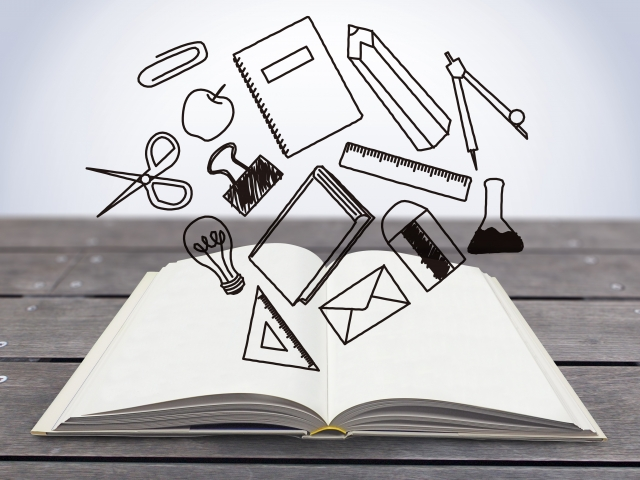

教育という言葉を聞くと誰しも反射的に「学校」を思い浮かべるのではないでしょうか。
学校と教育は切っても切れない関係にある。
両方でワンセット。そういうことです。
つまり学校を前提に教育を考えるのは誰にとっても当たり前の常識になっているということです。特に「子どもの教育」を考える場合は。
しかし本来、教育という概念は学校や学校制度とは必ずしも関係がないのです。学校がなくても「教育」そのものは成り立つし、むしろ個々の能力に応じた教育をやろうとすれば学校の存在はジャマになるかも知れません。
昔から特権階級の子弟などは家庭教師による個人教育が普通でした。
現在のような、学校を通しての一斉教育の歴史はそれほど古いものではなく近代に入ってからです。それまでは「子ども」の概念すら存在しなかったからです。
子どもたちが発見され（＝ココ）、また産業革命により大量の労働者が必要とされたことを背景に、7~8歳から15,16歳の子どもたちを「教育」することで社会に適応した国民をつくることが急務だったからです。大衆教育の誕生ですね。
そこでは読み書きや計算ができることと国民として社会のルールや規律を身につけさせるの２つが基本でした。
そして大量の生徒にこの２つを教え込む手段―装置―として学校という制度は効率的だったということです。
学校という1つの場所に一定年齢の集団を集め、同じカリキュラム同じ教科書、そして集団主義的ルールを一斉に課す。これはとても効率の良いやり方です。
「子どもの発見」と「学校」の誕生は同時発生的であり、学校の登場は国民の平均レベルを効率的に引き上げ国民国家（近代国家）の発展を促す上で大きな役割を果たしたのです。
ただここで問題なのは、学校というシステムは大衆の平均値を上げることには貢献するものの、個々の能力や個性を伸ばすという点では効果的ではないということです。そもそも学校はそのような役割の場所ではないからです。
あくまで平均レベルの底上げと、その時代や社会の価値観を植えこむ場所だからです。
画一教育こそ学校の役割
かつて日本の学校は「画一教育でケシカラン」とか「個性を尊重していない」と言われました。しかしこれらの言葉は学校批判としては的外れです。
なぜなら画一的教育こそが学校の神髄であり、学校の果たすべき重要な役割だからです。
国民の平均レベルを上げること、そして社会規範を植えこむためには等しく一定の型に押しこむしかない。
これは教師がどうのこうのとか、校則がどうのという問題ではありません。どんなに教師が良心的であっても学校というシステムの中にいる以上、社会的規範の体現者であるしかないのです。これは学校制度のもつ構造的問題です。
だから教師には相矛盾する葛藤があることになります。できる限り生徒の個々の能力、個性を伸ばしてやりたいという欲求と、社会の要請するルールや型に押し込めざるを得ない矛盾です。
後者は個性を削り取る作業だからです。
そして時代はますます学校や教師の伝統的役割にとって不利な状況になりつつあります。
なぜなら今やインターネットの普及などで誰でも膨大な「知」にアクセス可能となり、学校で教わるのは昔のように最先端の知識ではなく、社会も「従順で受け身」な人間より創造性や発想の斬新さを求める方向へとシフトしているからです。
まさに「個性重視」の時代がやって来たのです。
いま「教育を変えろ」という動きが社会の様々な領域からわき起こり、学校でもAL（アクティブ・ラーニング）型授業やディベートを取り入れた「主体学習」が導入され始めました。
しかしこれらの新しい試みも「学校制度」という従来のシステムの中でも考えている限り「枠」から飛び出すことは難しいでしょう。
枠そのものを外さない限り「絵に描いたモチ」になりかねません。
では、どうすればよいのか。
私には２つの方向性があるように思います。
まず1つは、学校が学校の構造的問題を正確に認識した上で従来の枠組みから自由になること。
もう1つは家庭教育の重要性です。
教育を学校から取り戻す
まず家庭のほうから。
家庭教育は今後ますます重要になると思います。
「子どもがどのような人間に育って欲しいか」「どのような価値観で生きていくのか」その辺を親自身が明確にしておく必要があります。
そのためにも従来のように学校教育に丸投げするのではなく ―学校の押しつける古い価値観に盲目的に従うのではなく― 子どもの長所や才能を親が見きわめ、できる限り励まし伸ばすようにすることが大事です。
親が学校の成績ばかり気にし「もっと算数ガンバリなさい」などと尻をたたくのは「どの教科も万べんなくそこそこの点を取ることが良いことだ」という、それこそ画一的人間（ステレオタイプ）の養成に加担していることになります。
そんなことより何が得意で何に興味があるのか、きちんと理解した上で自ら学ぶよう導かねばなりません。
学校の提示する価値観（テストの点や偏差値、集団主義や同調を強いる指導法）をうのみにして我が子にそれを上塗りするのではなく、もっと自分の子どもの個性や特性をしっかり見ることです。観察することです。
子どもの個性、特性は親が一番良く知っているはずです。「~ができない」という欠点をあげつらうのが教育ではありません。
まず「良いところ」を認め自信をもたせること。ここにこそエネルギーを使うべきです。
そうすれば後のことは自ずと展開します。何も難しいことをやる必要はありません。
子どもの「教育」を学校から取り戻すくらいのつもりでいて下さい。
教師は良きサポーターとなれ
次に学校のありかた。
くり返しになりますが学校は「学校」である限り生徒を主体的に教育することはできない。
「先生」が「生徒」に「教え」を授けるという形では、生徒はあくまで「教えられられる者」として受け身で居続けるしかできないのです。
先生＝教える者（権威者）
生徒＝教わる者（従属者）
この固定された枠組を壊すことでしか生徒の自発性、主体性引き出すことできないのです。
ですから学校や教師のやるべき第1のことは、ここまで述べてきた学校の「構造的問題」をまずは正確に認識すること。様々な試みはその後のことです。
でなければ、アクティブラーニングだとかディベート、調べ学習というきらびやかなメニューをそろえたところで形式だけになってしまうからです。現にいま学校現場ではこれらの新しいメニューをどう調理しようかとまどいが広がっています。
「アクティブラーニング」の研修も行われているものの、新しい学習指導法のマニュアルと受け取られているのが現状です。
いま求められているのは、教師と生徒の伝統的役割の変更であり発想の転換であるはずです。そこを変えずに「形式」だけ新しくして、過去の学校改革と同じ無残な結果しか招かないでしょう。
私事ですが、私はいま縁あってある学校の「改革」に携わています。
そこでは教師の意識改革を行うことが主な役目ですが、現場の先生たちは思ったより前向きで少しずつですが変化の兆しが見え始めています。私の力など微々たるものですが、それでも教師と生徒の関係が良い方向に変わりつつあることに先生方も手ごたえを感じているようです。
私自身もここまで述べてきたことを学校現場で実践できることに幸せを感じながら取り組んでいます。
学校は今まで閉鎖的な空間でした。私としてはその「最後の閉ざされた空間」である学校に風穴を開け新風を吹きこみたいと思っています。
「教育」を学校が独占する時代は終わり告げようとしています。
それでも学校の果たす役割はまだあると信じています。それは教師と生徒が対等な関係を保ちながらも、生徒の能力を引き出すために教師が「良きサポーター」
「良き理解者」へと自らの役割を変えていくことが出発点です。
教師の存在が「触媒」となって生徒の力を引き出す。
私はそんなイメージを胸に抱いて取り組んでいるところです。